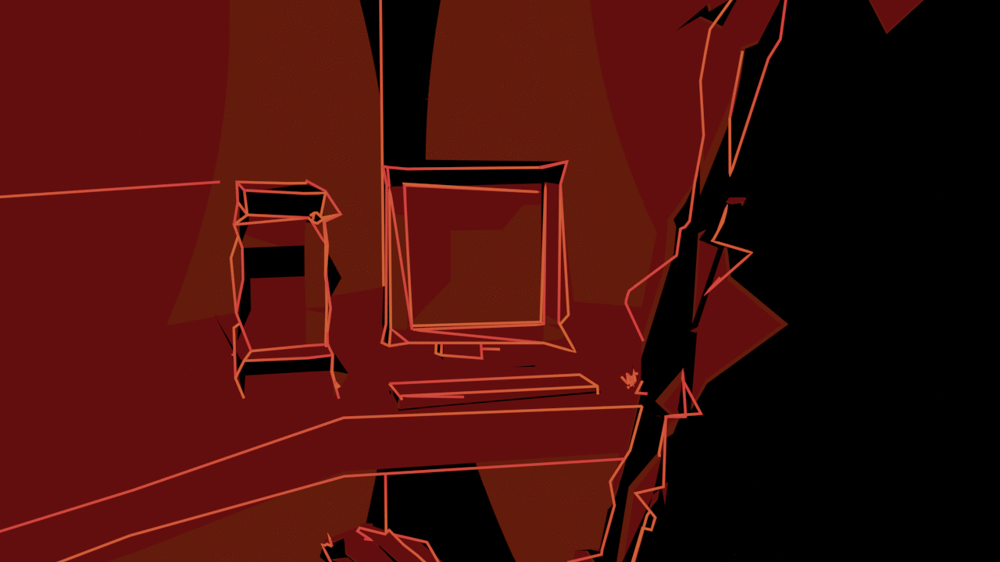

Office

Your Dream Mirror
Place
The office is a rather stereotypical location, as whenever anyone imagines one, they often immediately connect the location to working. Offices are also seen as orderly, intricate webs of people, acting as parts for a larger body. Thus, finding yourself within an office inside a dream usually denotes that you are trying to solve a problem going on in your waking life, and the reason this concept may manifest as an office is likely because of your way of thinking, which in this case would likely need to be analytical or logical